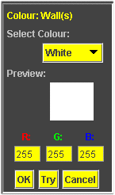

Assigning Colours in SimWorld
All objects in the SimWorld may have personalized colour schemes. These objects include:
--> the SimWorld Background, Walls, Road, Robot, Light Sensors, Touch Sensors
--> **Grid, **Ground/Intersection
Assuming you have an active Simulator window with an open SimWorld (click: learn how to open a SimWorld).
1.) To open color editing click: Options->Color Code->(...)
NOTE: (...) being the desired object, ie Walls, Robot, etc.
NOTE: for ** Objects refer to the links below on how to open color editing
Next, a menu will popup in the 'Property Settings' area, titled 'Color:(...)' (image below)

2.) From the 'Select Colour' drop down menu select the name of the colour that you want. After you make a selection, the colour will appear in the 'Preview' section, as well the colour's corresponding RBG value will be displayed.
--> to confirm the colour and close the editor click: ->OK
--> to test the colour without closing the editor click: ->Try
--> to close the colour editor click: ->Cancel
Related topics:
--> Assigning Colour to the Grid
--> Assigning Colours to Ground Objects